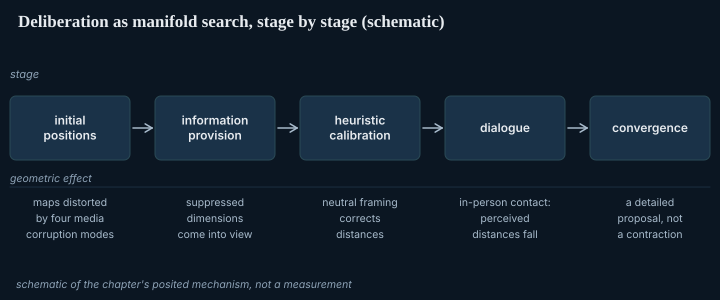
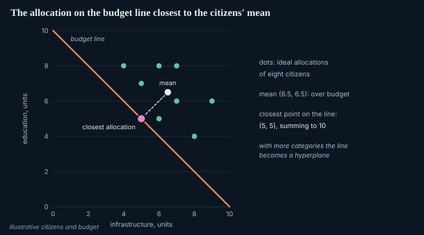

Chapter 14: Deliberative Democracy as Manifold Exploration
“When the people speak — after they have had a chance to think — they speak differently.” — James Fishkin
RUNNING EXAMPLE — DISTRICT 7
District 7 convenes a citizens’ assembly on its transportation plan. Forty-two residents, randomly selected, gather for a three-day deliberation in the community center. They include a bus driver from Eastfield, a software engineer from the university enclave, a retired teacher from Meadow Pines, a small business owner from the Route 9 corridor, and a rancher from the exurban fringe.
Before deliberation, the assembly mirrors the district’s 1D polarization. Self-identified liberals favor public transit; conservatives favor highway expansion. The positions track party identification almost perfectly. The 1D projection is bimodal.
After three days of expert briefings, facilitated small-group discussions, and plenary debate, something remarkable happens. The assembly converges on a multi-modal transportation plan that no participant had initially supported: a bus rapid transit line connecting the urban core to the university (desired by the bus driver and the engineer), a highway interchange improvement benefiting the exurban commuters (desired by the rancher), a senior shuttle service linking Meadow Pines to the hospital (desired by the retired teacher), and bicycle infrastructure in the suburban corridor (desired by nobody specifically but accepted by everyone as sensible).
The plan occupies a region of the preference manifold that the 1D projection had rendered invisible. No one started there. The deliberation — the collective exploration of the manifold — found it.
Deliberation as Manifold Search
If voting contracts the manifold and campaigns manipulate the projection, deliberative democracy — structured dialogue among citizens — is the closest institutional analogue to direct manifold exploration.
A citizens’ assembly or deliberative poll brings together a random sample of citizens, provides them with balanced information, structures their dialogue through facilitation, and asks them to produce a recommendation. Geometrically, the process works as follows:
Initial positions. Each participant begins at their position on the preference manifold — the position shaped by their personal experience, their media environment, and their party identification. For most participants, this position is distorted by the four modes of media heuristic corruption described in Chapter 11: dimensional suppression (they are aware of only some dimensions), distance inflation (they perceive cross-partisan distances as larger than they are), axis rotation (their mental map is oriented by their media’s preferred projection), and metric collapse (they perceive out-group positions as uniformly “far”).
Information provision. The deliberation begins with expert briefings on the topic under discussion. The briefings provide factual information on all relevant dimensions — not just the dimensions emphasized by participants’ media environments. The effect is dimensional activation: participants become aware of dimensions they had previously ignored. The effective dimensionality of their political perception increases.
Heuristic calibration. The expert briefings and the facilitators’ framing correct some of the metric distortions introduced by media corruption. Neutral framing replaces partisan framing. Factual data replaces anecdotal impression. The participants’ heuristic fields — their estimates of manifold distances — become more accurate.
Manifold exploration through dialogue. In small-group discussions, participants encounter other participants whose manifold positions are different from their own. Crucially, they encounter these positions in person, with context and nuance, rather than through the distorting lens of media coverage. The in-person encounter corrects affective polarization: perceived distances decrease as participants discover that their neighbors’ actual positions are closer than their media-mediated impressions suggested.
Convergence. The deliberation produces a recommendation — a region of the manifold that the assembly judges to be near-optimal after informed exploration. The recommendation is not a vote (a contraction) but a detailed proposal that preserves dimensional structure.

Figure 14.1. Deliberation as manifold search, in the five stages of the preceding section. Participants start from positions and maps distorted by the media corruption modes of Chapter 11; briefings activate suppressed dimensions; neutral framing and data correct the metric; in-person dialogue shrinks perceived distances; and the assembly converges on a detailed proposal rather than a vote. A schematic of the chapter’s posited mechanism.
Fishkin’s Empirical Evidence, Geometrized
James Fishkin’s Deliberative Polling experiments, conducted over three decades in dozens of countries, provide the best empirical data on what happens when citizens explore the political manifold. The key findings, reinterpreted through the geometric framework:
Opinion Change as Manifold Movement
Deliberation moves participants’ positions on the manifold. The mean shift is toward the manifold center of mass — deliberation has a centripetal effect, reducing apparent polarization. The magnitude of the shift varies by topic and by participant:
-
On factual questions (where expert briefings provide new information), the shift is large and durable. Participants update their positions toward the expert consensus, moving on dimensions where their media-derived heuristic was inaccurate.
-
On value questions (where no “correct” answer exists), the shift is moderate and often involves dimensional reweighting rather than position change: participants do not abandon their values but recalibrate the relative importance of different dimensions.
-
On group-identity questions ($d_6$), the shift is smallest. Positions tied to deep identity are the most resistant to deliberative movement, consistent with the sacred-value curvature singularity described in Chapter 4.
Geometrically, the centripetal effect is a consequence of heuristic correction: when media-induced metric distortions are reduced, voters discover that the manifold center of mass is closer to their actual position than they had believed. They do not move toward the center; they discover that they were always closer to it than their distorted maps suggested.
Dimensional Activation
Post-deliberation preferences show activation of previously suppressed dimensions. Participants who entered the deliberation with positions primarily on $d_1$ (economics) and $d_2$ (social values) — the dimensions emphasized by their media environments — exit with positions on $d_3$ (environment), $d_4$ (foreign policy), and $d_5$ (institutional design) as well.
The activation is a direct consequence of the information provision and the dialogue structure: the deliberation covers dimensions that the participants’ media environments suppress. The preference manifold’s effective dimensionality increases after deliberation — participants hold opinions on more dimensions, and these opinions are based on more information.
Reduced Affective Polarization
Contact with out-group members in a structured setting reduces the perceived manifold distance to the out-group. The metric distortion (inflated inter-group distance) partially corrects when participants observe that out-group members’ actual manifold positions are closer than the corrupted heuristic suggested.
The magnitude of the reduction is substantial: Fishkin’s data is reported to show that post-deliberation participants rate the out-group roughly 10-20 points higher on 100-point thermometer scales, and that the improvement persists for months after the deliberation (figures attributed to his deliberative polls and not checked here against a specific source). The correction is not ideological — participants do not become more liberal or conservative. They become more accurate: their heuristic maps of the political manifold better approximate the true manifold structure.
Participatory Budgeting as Constrained Manifold Optimization
Participatory budgeting — pioneered in Porto Alegre, Brazil, and now practiced in hundreds of cities worldwide — asks citizens to allocate limited resources across competing priorities. This is multi-dimensional optimization under constraint: exactly the kind of problem for which manifold methods are designed.
The budget constraint is a hyperplane in resource space: the total allocation must equal the available budget. The citizens’ preferences define a distribution on the preference manifold: each citizen has an ideal allocation across the available categories (infrastructure, education, public safety, parks, social services, etc.). The optimal allocation — the one that best represents the citizens’ collective preferences — is the point on the budget hyperplane closest to the preference distribution’s Frechet mean on the full manifold.
Under traditional budgeting, the allocation is determined by elected officials whose positions on the manifold may differ from the electorate’s Frechet mean (the Representation Paradox of Chapter 5). Under participatory budgeting, the citizens directly estimate the Frechet mean through deliberation and voting. The process is not perfect — it still involves contractions (voting within the participatory budgeting process) — but it preserves more dimensional structure than representative budgeting because the participants interact with the multi-dimensional trade-offs directly.

Figure 14.2. Participatory budgeting as the chapter states it, with two spending categories. Each dot is one citizen’s ideal allocation; each asks for more than the budget allows. The budget constraint is a line (a hyperplane in more categories), and the allocation the chapter calls optimal is the point on it closest to the citizens’ mean. Eight illustrative citizens, a budget of 10 units and Euclidean distance.
Case Studies in Deliberation
Ireland’s Citizens’ Assemblies (2016-2020)
Ireland convened randomly selected citizens’ bodies in the 2010s, whose recommendations on marriage equality and abortion led to constitutional amendments approved by large referendum majorities. These assemblies are the most dramatic demonstrations of deliberative democracy’s manifold-exploration capacity.
The Irish case is geometrically instructive because Ireland’s abortion debate was organized around a sacred-value boundary — the Eighth Amendment to the Irish Constitution, which had created a curvature singularity on the social values dimension ($d_2$). Positions on opposite sides of the Eighth Amendment were perceived as infinitely distant: pro-life and pro-choice Irish citizens viewed each other across a chasm that no political compromise could bridge.
The Citizens’ Assembly bridged it — not by finding a “compromise” on the sacred-value dimension (sacred values do not admit compromise) but by activating additional dimensions. Assembly members heard medical testimony (activating the health dimension, related to $d_3$ and $d_1$), personal testimony from women affected by the Eighth Amendment (activating the liberty dimension, $d_2$ from a different angle), and comparative legal analysis (activating the institutional-design dimension, $d_5$). The deliberation did not soften participants’ sacred values. It revealed that the policy question was multi-dimensional — it involved not just “is abortion right or wrong?” ($d_2$) but “how should the state handle medical decisions?” ($d_1$/$d_5$) and “what are the consequences of the current law for real people?” (activating empathy across the $d_2$ boundary).
The assembly’s recommendation — to repeal the Eighth Amendment and replace it with legislation — was approved by roughly two-thirds of voters in a national referendum. The recommendation was not a 1D compromise between pro-life and pro-choice positions. It was a multi-dimensional resolution that occupied a region of the manifold accessible only through the kind of dimensional activation that deliberation provides.
British Columbia Citizens’ Assembly on Electoral Reform (2004)
The BC Citizens’ Assembly — about 160 randomly selected citizens who spent a year studying electoral systems — recommended switching from plurality voting to a single transferable vote (STV) system. The recommendation demonstrated deliberation’s capacity for dimensional recovery: assembly members who entered the process with no opinion on electoral systems exited with a nuanced, multi-dimensional preference for a system that preserved more manifold structure.
The assembly’s recommendation was put to a referendum and received roughly 58% support — just short of the 60% threshold required for adoption. The near-miss illustrates the challenge of translating manifold-level understanding (achieved through deliberation) into scalar-level approval (required by referendum): voters who had not participated in the deliberation were being asked to approve a system whose geometric advantages they had not experienced.
The Cost of Deliberation
Deliberation recovers manifold structure that voting discards. But deliberation is expensive:
-
Time cost: A citizens’ assembly requires days of participant time. Deliberative polls require weekends. The time cost limits participation and raises equity concerns: who can afford to spend three days deliberating?
-
Facilitation cost: Effective deliberation requires trained facilitators, expert panelists, balanced briefing materials, and physical infrastructure. These costs are nontrivial.
-
Scale limitation: A citizens’ assembly serves dozens to hundreds of participants. Democratic governance serves millions. How does deliberation scale?
The geometric framework quantifies the trade-off: deliberation recovers manifold information that voting discards, but at a cost in time and resources. The question is whether the recovered information is worth the cost.
For high-stakes decisions — constitutional design, major infrastructure investments, climate policy, health system reform — the dimensional loss from voting may be unacceptable. These decisions have consequences across all six dimensions, and a contraction that preserves only one or two dimensions produces outcomes that are systematically misaligned with citizen preferences on the discarded dimensions. Deliberation is warranted because the cost of dimensional loss exceeds the cost of the deliberative process.
For routine decisions — minor legislation, procedural votes, administrative appointments — the scalar contraction may be adequate. The decisions have narrow consequences, the dimensional structure is simple, and the cost of deliberation exceeds the value of the recovered information.
The boundary between these categories is itself a policy question — and one that benefits from geometric analysis. The more dimensions a decision touches, the more valuable manifold-preserving processes become.
Scaling Deliberation
The scale limitation of deliberation — dozens of participants in a population of millions — is the central challenge for deliberative democratic theory. Several approaches to scaling have been proposed:
Cascaded assemblies: A hierarchy of deliberative bodies, where local assemblies produce recommendations that feed into regional assemblies, which feed into national assemblies. Each level aggregates manifold information from the level below. The information loss at each aggregation stage is governed by the Democratic Irrecoverability Theorem, but the total loss may be less than the loss from a single voting contraction, because each aggregation stage is informed by richer input.
Structured online deliberation: Digital platforms designed for deliberative dialogue, with AI-assisted facilitation, balanced information provision, and structured turn-taking. The platform reduces the cost of deliberation (participants can deliberate asynchronously from home) at the expense of some of the interpersonal contact that drives affective polarization reduction.
AI-facilitated deliberation: Large language models as deliberation facilitators, providing balanced information summaries, identifying areas of agreement and disagreement, and suggesting compromise positions on the manifold. The AI does not vote or recommend — it serves as a manifold map, helping participants navigate the preference space more efficiently. Chapter 16 will discuss the potential and the risks of this approach.
District 7: The Assembly’s Recommendation
After three days, District 7’s citizens’ assembly produces its transportation recommendation. The geometric analysis of this hypothetical process, with illustrative numbers:
Pre-deliberation distribution: The 42 participants’ positions on the transportation-relevant submanifold (a 3D subspace: public transit investment, highway investment, and funding mechanism) are bimodal — two clusters corresponding roughly to the partisan divide. Mean inter-cluster distance: 3.4 Mahalanobis units.
Post-deliberation distribution: The distribution has shifted and compressed. The two clusters have moved toward each other (mean inter-cluster distance: 1.8 units). Three participants have moved substantially — they reported that information about the actual costs and benefits of transit changed their assessment. The effective dimensionality has increased from 2 (the partisan axis dominated pre-deliberation) to 3 (participants now differentiate between transit type, geographic coverage, and funding source).
The recommendation: The multi-modal plan — bus rapid transit, highway interchange, senior shuttle, bike lanes — occupies a point on the manifold that is 0.6 units from the post-deliberation Frechet mean. It is the closest feasible plan to the assembly’s collective position. No participant started at this position. The deliberation — the collective exploration of the manifold, informed by expert input and interpersonal contact — discovered it.
The recommendation goes to the city council, which adopts most of its components. The outcome is not what any party would have proposed. It is not what any media outlet predicted. It is the manifold’s answer to a question that the 1D projection could never have asked.
DISTRICT 7 — CHAPTER SUMMARY
We have analyzed deliberative democracy as manifold exploration — the institutional process most capable of recovering the dimensional structure that voting and media consumption destroy. Deliberation corrects media-induced heuristic corruption, activates suppressed dimensions, reduces affective polarization, and moves participants toward the manifold center of mass — not by changing their values but by correcting their maps.
In District 7, a citizens’ assembly on transportation produced a recommendation that no participant initially supported — a multi-modal plan occupying a region of the manifold that was invisible under 1D partisan projections. The deliberation found the manifold’s optimum by exploring the preference space directly.
In Chapter 15, we introduce the Political Bond Index: a formal measure of how well an electoral system represents its electorate on the full manifold, enabling principled comparison across voting systems, redistricting plans, and institutional designs.